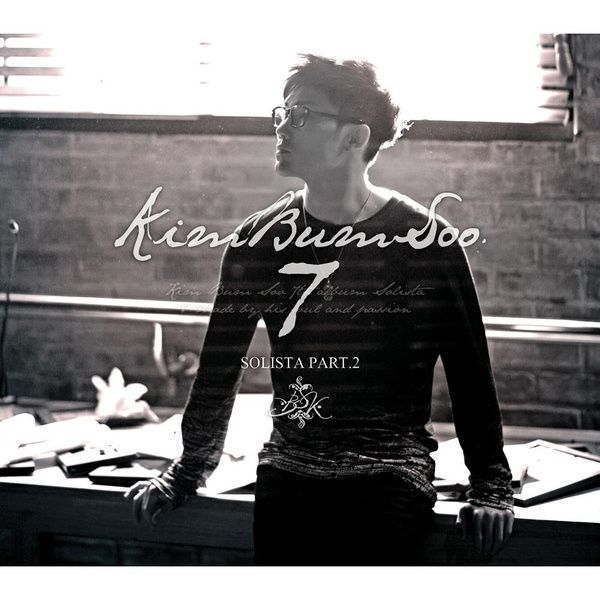

안녕하세요 라보엠입니다.
요즘 한 방송사에서 50세 이상 시니어들을 모아 인생의 후반전을 함께할 끝사랑을 찾는 예능 프로그램이 이슈가 되고 있습니다. 나는 솔로 등 이른바 짝짓기 예능이 인기를 끌고 있는 가운데, 당돌하고 에너지 넘치는 젊은이들의 사랑과는 다른 여유와 능숙한 면모를 보여주는 시니어들 모습이 신선하게 다가왔습니다. 출연자 리스크로 2회만에 아쉽게 표류하고 있지만, 새로운 시도가 좋았습니다. 오늘은 이 예능과 같은 제목을 가진 김범수의 7집 파트2에 수록된 끝사랑 노래를 소개해드리겠습니다.

김범수 끝사랑 노래 Live
김나박이 에서 김을 담당하고 있는 김범수는 목소리 하나만으로 사람을 울리는 대한민국의 몇 안되는 가수입니다. 뮤직비디오도 있지만 김범수의 라이브 영상 링크를 첨부합니다. 2016년 시네마 음악회에 출연한 김범수의 라이브 무대에서 배경으로 보이는 영상은 전직 복서인 남자와 시각 장애인 여자의 사랑을 그린 소지섭, 한효주 주연의 오직 그대만(2011)으로 이 노래 끝사랑이 주제곡으로 사용되었습니다. 영화와 너무 잘 어울리죠. 저도 개봉 당시 영화관에서 봤던것 같은데, 한효주와 소지섭이 참 잘 어울렸습니다.
김범수 끝사랑 노래 가사 - 윤일상 작곡 / 윤사라 작사
내가 이렇게 아픈데 그댄 어떨까요
원래 떠나는 사람이
더 힘든 법인데
아무 말하지 말아요
그대 마음 알아요
간신히 참고 있는 날
울게 하지 마요
이별은 시간을 멈추게 하니까
모든걸 빼앗고 추억만 주니까
아무리 웃어 보려고
안간힘 써 봐도
밥 먹다가도 울겠지만
그대 오직 그대만이
내 첫사랑 내 끝사랑
지금부터 달라질 수 없는 한 가지
그대만이 영원한 내 사랑, 워
그대도 나처럼 잘못했었다면
그 곁에 머물기 수월했을까요
사랑해 떠난다는 말
과분하다는 말
코웃음 치던 나였지만
그대 오직 그대만이
내 첫사랑 내 끝사랑
지금부터 그대 나를 잊고 살아도
그대만이 영원한 내 사랑
나는 다시는 사랑을
못할 것 같아요
그대가 아니면
김범수 끝사랑 삽입 영화 오직 그대만 볼 수 있는 곳
오직 그대만 다시보기 | 키노라이츠 #리뷰 #평가
잘나가던 복서였지만 어두운 상처 때문에 마음을 굳게 닫아버린 철민. 시력을 잃어가고 있지만, 늘 밝고 씩씩한 정화. 좁은 주차박스에서 외로운 시간을 보내고 있던 철민에게 꽃 같은 그녀, 정
m.kinolights.com
김범수 ver. 마라탕후루
김범수의 노래를 듣고 눈물을 찔끔 흘리셨지도 모르겠지만, 감동파괴 죄송합니다. 요즘 트렌드에 맞춰 김범수도 커버곡들을 올리고 있습니다. 얼마전 유퀴즈에도 출연해 마라탕후루를 들려주며 초등학생을 상대로 최선(?)을 다하는 모습을 보여줬습니다. 이 노래가 이렇게 제 임자를 만나다니 너무 놀라운 커버였습니다. 앞으로도 좋은 노래 많이 들려주세요 김범수 선배!